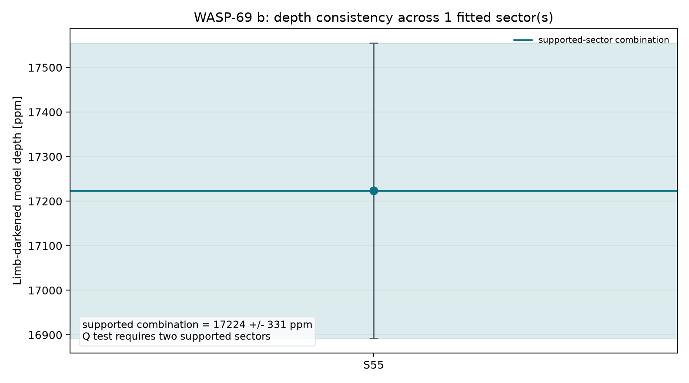
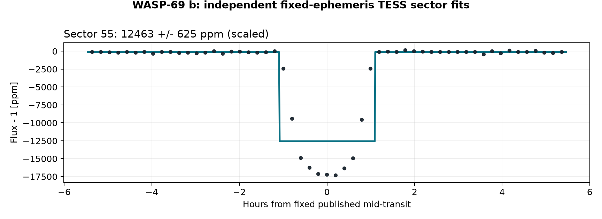

Data source notes
SHA-256, LF-normalised text
66912fbe4e85f4c7d081f2ef93d4ace254d192b864d56648e62d5fd7e32188c8Browse 9 versioned evidence files. Table previews simply display stored rows. Consult the project report for the source, processing steps, and inference assumptions.


66912fbe4e85f4c7d081f2ef93d4ace254d192b864d56648e62d5fd7e32188c8| pl_name | hostname | ra | dec | pl_orbper | pl_tranmid | pl_trandur |
|---|---|---|---|---|---|---|
| WASP-69 b | WASP-69 | 315.0259661 | -5.094857 | 3.86813881 | 2455748.83428 | 2.1869 |
e80db626b787bfa787df64762c52a0a2978c4b78db947295682048828580cd48ee0291c2f014296fa47b06fa7eb47a16a79fe4679841ce203518aaa5620cbd26| quantity | value | unit |
|---|---|---|
| sector | 55 | TESS sector |
| period_days | 3.86813881 | days; NASA Exoplanet Archive |
| published_duration_hours | 2.1869 | hours; NASA Exoplanet Archive |
| a_over_rstar | 12.1609857678 | fixed from saved a and stellar radius |
fd7a0ba2b227273b7ae9fec8a2acbdcb897474bc75800e4680ed1c38a5b2c809| sector | filename | transit_events | n_points | transit_supported | delta_bic | timing_shift_hours |
|---|---|---|---|---|---|---|
| 55 | tess2022217014003-s0055-0000000248853232-0242-s_lc.fits | 4 | 1573 | True | 134924.8131 | -0.002275553938 |
90b3b67c7d7a7d166b41a994787354383feb8021d89ca1e5824c424684f59716fbf741f3c05f3ffb626c928912b912d4c8dca7b72a2256afa3a2aebff66fc72d6c4518e3d8094878f5cb83b660567065115cfad07f95aae4b833e86a3c47e3c1ab57c25ffaff2367a81aee8aa836d080cbc314b8afa97c8713b1286c9f66b9e1d7534c9e4e8f4cdbc4e7aa79483aae76fc6e588b71c5e232bdac46380546ac64SHA-256 values verify the stored files. They do not independently validate the scientific analysis. Rebuild this page with python scripts/evidence_catalog.py followed by python scripts/render_evidence_page.py.